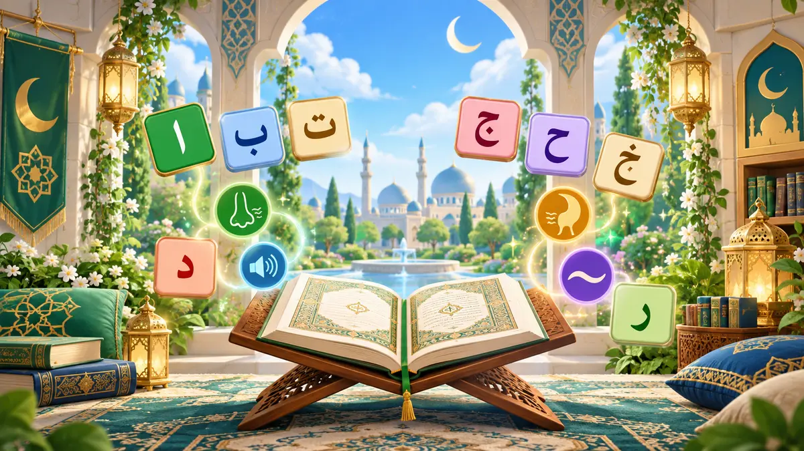

Tajweed Quest
رِحْلَةُ تُحْفَةِ الأَطْفَال
Learn and memorise all 61 lines through 15 Reading Eggs-style maps, line games, Talqeen practice and teacher checks.
Use the same username and password as Seeraa Quest and the Qur’an Tracker. Ask a parent or teacher if you need help with your account.
Tap the glowing lesson to begin!
Talqeen Teacher Check
Finish this map, then recite every line to your teacher.
Teacher signature
1/7
💚
🪙
Lesson rewards collected!
Excellent work!
⭐⭐⭐
🪙 0 coins in your purse
Tap each card to reveal its meaning.
Drag each Arabic word to its English meaning. On a phone, tap the word and then tap its meaning.

Your Certificate
Choose Your Explorer
Your avatar travels with you and is saved to your student account.